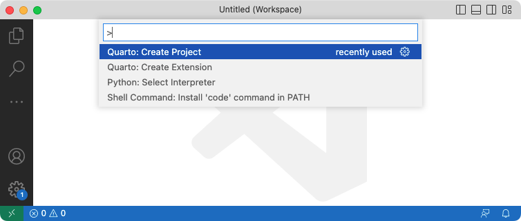
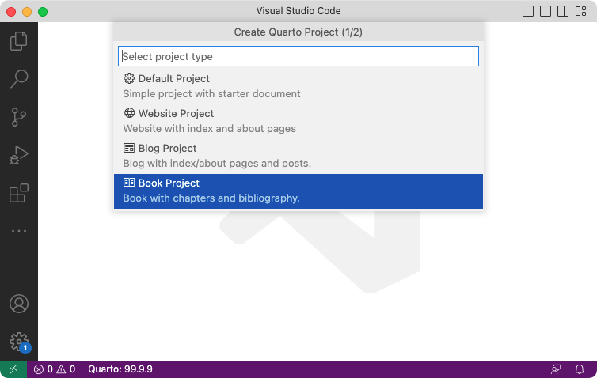
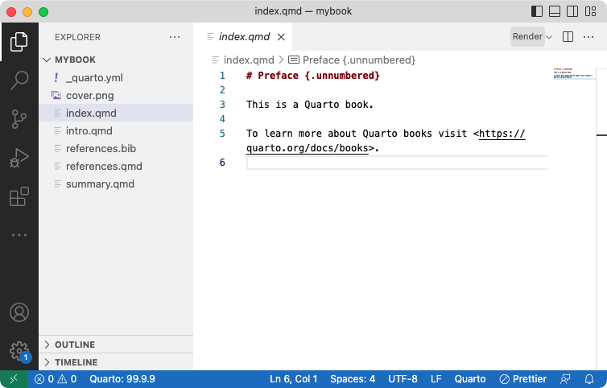
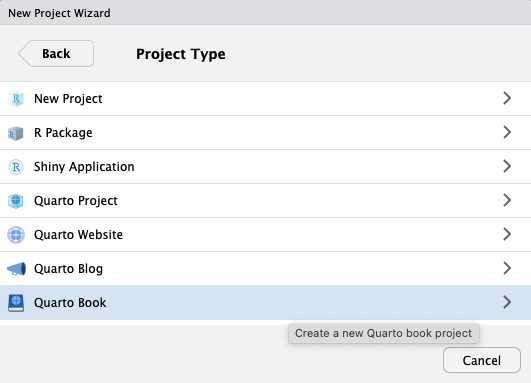
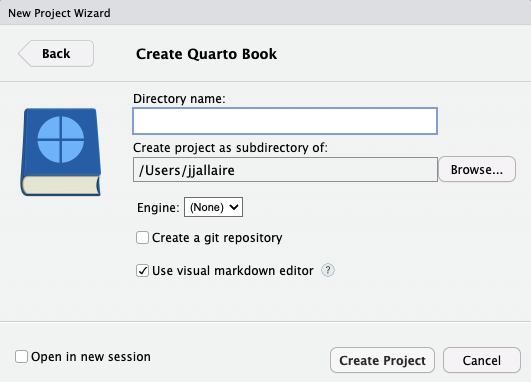
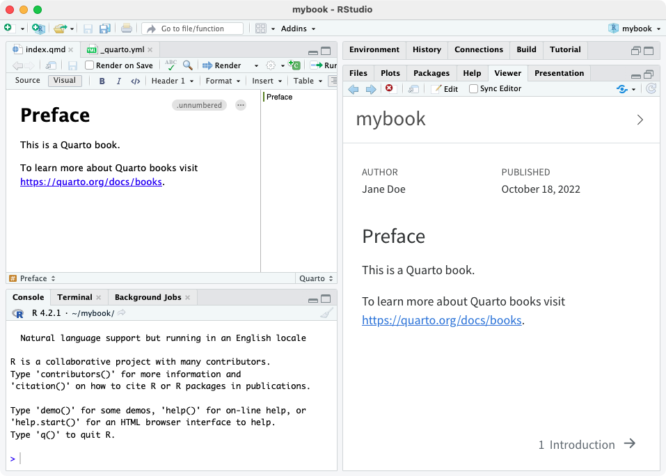

Creating a Book
Overview
Quarto Books are combinations of multiple documents (chapters) into a single manuscript. Books can be created in a variety of formats:
- HTML
- MS Word
- EPUB
- AsciiDoc
HTML books are actually just a special type of Quarto Website and consequently support all of the same features as websites including full-text search. The most important difference is that HTML books use chapter numbers and therefore support Cross References between different chapters.
Here are some examples of books created with Quarto:
| Book | Source |
|---|---|
| R for Data Science | Code |
| Python for Data Analysis | Code |
| Visualization Curriculum | Code |
Quarto books can be published to a wide variety of destinations including GitHub Pages, Netlify, RStudio Connect, or any other static hosting service or intranet web server. See the documentation on Publishing Websites for additional details.
Quick Start
Follow the Quick Start for your tool of choice to get a simple book up and running. After covering the basics, read on to learn about more advanced book features.
To create a new book project within VS Code, execute the Quarto: Create Project command from the command-palette:

Then, select Book Project:

You’ll be prompted to select a parent directory to create the project within. Then, you’ll be asked to name the directory for your book project:

The new book project will be created and opened within VS Code. Click the Render button to preview the book:

The preview will show to the right of the source file. As you re-render index.qmd or render other files like intro.qmd, the preview is automatically updated.
To create a new book project within RStudio, use the New Project command and select Quarto Book:


Then, provide a directory name and other relevant options for the book:

Click the Render button to preview the book:

The preview will show to the right of the source file. As you re-render index.qmd or render other files like intro.qmd, the preview is automatically updated.
To create a new book project from the Terminal, use the quarto create-project command, specifying the directory that will hold the new project as first argument:
Terminal
quarto create-project mybook --type bookThis will create the scaffolding for a simple book in the mybook sub-directory. Use the quarto preview command to render and preview the book:
Terminal
quarto preview mybookThe book preview will open in a new web browser. As you edit and save index.qmd (or other files like intro.qmd) the preview is automatically updated.
Workflow
Above we demonstrated how to create and edit a simple book with chapters contained in the files index.qmd, intro.qmd, summary.qmd. Here we’ll cover additional aspects of book workflow in more depth.
Config File
A Quarto project file (_quarto.yml) is contained within the book project directory. This file contains the initial configuration for your book. For example:
project:
type: book
book:
title: "mybook"
author: "Jane Doe"
date: "8/18/2021"
chapters:
- index.qmd
- intro.qmd
- summary.qmd
- references.qmd
bibliography: references.bib
format:
html:
theme: cosmo
pdf:
documentclass: scrreport
epub:
cover-image: cover.pngSee the Project Basics article to learn more about working with projects, including how to add custom pre and post render scripts to your book.
Book Preview
If you are using VS Code or RStudio, the Render button automatically renders and runs quarto preview in an embedded window. You can also do the same thing from the Terminal if need be:
Terminal
# preview the book in the current directory
quarto previewNote that when you preview a book (either using VS Code / RStudio integrated tools or from the terminal) changes to configuration files (e.g. _quarto.yml) as well as book resources (e.g. theme or CSS files) will cause an automatic refresh of the preview.
You can customize the behavior of the preview server (port, whether it opens a browser, etc.) using command line options or the _quarto.yml config file. See quarto preview help or the project file reference for additional details.
As you preview your book, chapters will be rendered and updated. However, if you make changes to global options (e.g. _quarto.yml or included files) you need to fully re-render your book to have all of the changes reflected. Consequently, you should always fully quarto render your site before deploying it, even if you have already previewed changes to some pages with the preview server.
For AsciiDoc Books we recommend using the HTML format to preview your book, read more in AsciiDoc Books.
Publishing
When you are ready to publish the book, use the render command to render all output formats:
Terminal
quarto renderIf you pass no arguments to quarto render, all formats will be rendered. You can also render individual formats via the --to argument:
Terminal
quarto render # render all formats
quarto render --to pdf # render PDF format onlyThe output of your book will be written to the _book sub-directory of your book project:
Terminal
mybook/
_book/
index.html # and other book files
mybook.pdf
mybook.epubSee the documentation on Publishing Websites for details on how to publish books to GitHub Pages, Netlify, and other services. Note that in that documentation the output-dir may be referred to as _site: for publishing books you should use _book rather than _site.
AsciiDoc Books
For AsciiDoc books, we recommend that while you are working on your book, you preview your content using Quarto’s built in HTML format, which allows a iterative workflow using the preview capabilities of Quarto. Once you’re ready to produce AsciiDoc, you can use the AsciiDoctor tools to compile your book to PDF or HTML output to preview the content in its final rendered form.
Previewing PDF with Asciidoctor-pdf
Creating a PDF preview with the AsciiDoc toolchain is a useful way to verify that the AsciiDoc output of your book can be rendered properly. To do this, follow these instructions:
First, install Asciidoctor PDF by following the instructions here: https://docs.asciidoctor.org/pdf-converter/latest/install/
From the terminal in the root of your project, use the following command to compile your AsciiDoc book to a PDF:
$ asciidoctor-pdf _book/book-asciidoc/<title>.adocThe PDF will be placed at
_book/book-asciidoc/<title>.pdf.
Previewing HTML with Asciidoctor
Creating an HTML preview the AsciiDoc toolchain is a useful way to verify that the AsciiDoc output of your book can be rendered properly. To do this, follow these instructions:
First, install Asciidoctor by following the instructions here: https://docs.asciidoctor.org/asciidoctor/latest/install/
From the terminal in the root of your project, use the following command to compile your AsciiDoc book to a PDF:
$ asciidoctor _book/book-asciidoc/<title>.adocA single HTML file (with the entire contents of the book) will be placed at
_book/book-asciidoc/<title>.html. The HTML file will contain references to files and images in the_book/book-asciidoc/folder, so the HTML will not display these properly if it is moved without also moving those folders.
Learning More
Once you’ve got the basic book template up and running check out these articles for various ways to enhance your book:
Book Structure delves into different ways to structure a book (numbered and unnumbered chapters/sections, creating multiple parts, adding appendices, etc.)
Book Crossrefs explains how to create cross references to sections, figures, tables, equations and more within books.
Book Output covers customizing the style and appearance of your book in the various output format as well as how to provide navigation and other tools for readers.
Book Options provides a comprehensive reference to all of the available book options.
Code Execution provides tips for optimizing the rendering of books with large numbers of documents or expensive computations.
Publishing Websites enumerates the various options for publishing your book as a website including GitHub Pages, Netlify, and RStudio Connect.